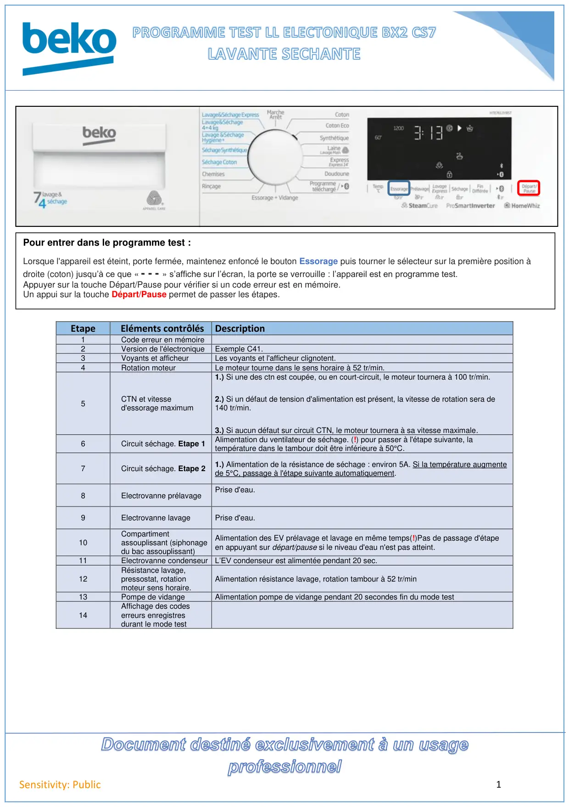
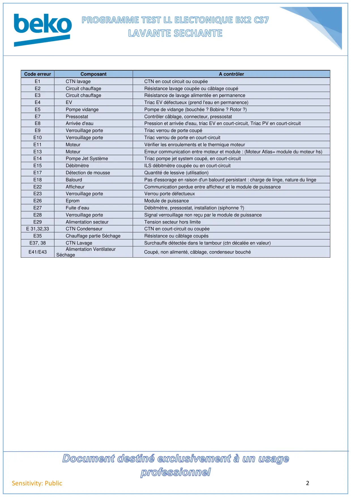

Prog Test LLS BX2C7S

1Sensitivity: PublicEtapeEléments contrôlésDescription1Code erreur en mémoire2Version de l'électroniqueExemple C41.3Voyants et afficheurLes voyants et l'afficheur clignotent.4Rotation moteurLe moteur tourne dans le sens horaire à 52 tr/min.5CTN et vitessed'essorage maximum1.) Si une des ctn est coupée, ou en court-circuit, le moteur tournera à 100 tr/min.2.) Si un défaut de tension d'alimentation est présent, la vitesse de rotation sera de140 tr/min.3.) Si aucun défaut sur circuit CTN, le moteur tournera à sa vitesse maximale.6Circuit séchage. Etape 1Alimentation du ventilateur de séchage. (!) pour passer à l'étape suivante, latempérature dans le tambour doit être inférieure à 50°C.7Circuit séchage. Etape 21.) Alimentation de la résistance de séchage : environ 5A. Si la température augmentede 5°C, passage à l'étape suivante automatiquement.8Electrovanne prélavagePrise d'eau.9Electrovanne lavagePrise d'eau.10Compartimentassouplissant (siphonagedu bac assouplissant)Alimentation des EV prélavage et lavage en même temps(!)Pas de passage d'étapeen appuyant sur départ/pause si le niveau d'eau n'est pas atteint.11Electrovanne condenseur L’EV condenseur est alimentée pendant 20 sec.12Résistance lavage,pressostat, rotationmoteur sens horaire.Alimentation résistance lavage, rotation tambour à 52 tr/min13Pompe de vidangeAlimentation pompe de vidange pendant 20 secondes fin du mode test14Affichage des codeserreurs enregistresdurant le mode testPour entrer dans le programme test :Lorsque l'appareil est éteint, porte fermée, maintenez enfoncé le bouton Essorage puis tourner le sélecteur sur la première position àdroite (coton) jusqu’à ce que « - - - » s’affiche sur l’écran, la porte se verrouille : l’appareil est en programme test.Appuyer sur la touche Départ/Pause pour vérifier si un code erreur est en mémoire.Un appui sur la touche Départ/Pause permet de passer les étapes.
1 / 2
2Sensitivity: PublicCode erreurComposantA contrôlerE1CTN lavageCTN en cout circuit ou coupéeE2Circuit chauffageRésistance lavage coupée ou câblage coupéE3Circuit chauffageRésistance de lavage alimentée en permanenceE4EVTriac EV défectueux (prend l'eau en permanence)E5Pompe vidangePompe de vidange (bouchée ? Bobine ? Rotor ?)E7PressostatContrôler câblage, connecteur, pressostatE8Arrivée d'eauPression et arrivée d'eau, triac EV en court-circuit, Triac PV en court-circuitE9Verrouillage porteTriac verrou de porte coupéE10Verrouillage porteTriac verrou de porte en court-circuitE11MoteurVérifier les enroulements et le thermique moteurE13MoteurErreur communication entre moteur et module : (Moteur Atlas= module du moteur hs)E14Pompe Jet SystèmeTriac pompe jet system coupé, en court-circuitE15DébitmètreILS débitmètre coupée ou en court-circuitE17Détection de mousseQuantité de lessive (utilisation)E18BalourdPas d'essorage en raison d'un balourd persistant : charge de linge, nature du lingeE22AfficheurCommunication perdue entre afficheur et le module de puissanceE23Verrouillage porteVerrou porte défectueuxE26EpromModule de puissanceE27Fuite d’eauDébitmètre, pressostat, installation (siphonne ?)E28Verrouillage porteSignal verrouillage non reçu par le module de puissanceE29Alimentation secteurTension secteur hors limiteE 31,32,33CTN CondenseurCTN en court-circuit ou coupéeE35Chauffage partie SéchageRésistance ou câblage coupésE37, 38CTN LavageSurchauffe détectée dans le tambour (ctn décalée en valeur)E41/E43Alimentation VentilateurSéchageCoupé, non alimenté, câblage, condenseur bouché
2 / 2